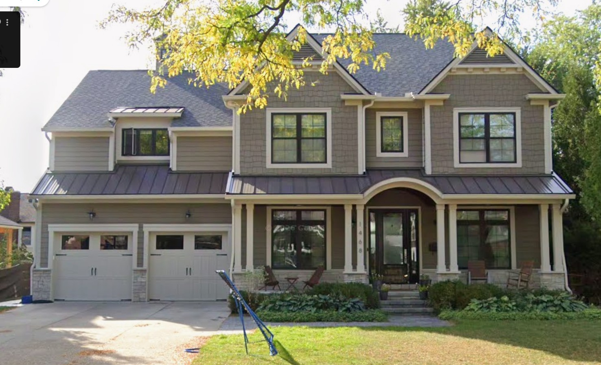

Elevations
Paired-gable stone and modern brick study — October 30
Open the exterior model for orthographic elevation views. See site placement measurements and assumptions.
Current architectural direction: adapt the owner’s new reference through paired front cross-gables, a subordinate garage roof and a continuous charcoal standing-seam porch canopy with a segmental arched entry accent. Keep the actual plan and openings, not the reference house’s floor plan or shingle siding. Each gable spans 14.35 ft, rises 6.2 ft from the 19.2-ft eave to a 25.4-ft ridge (about 10.37:12). Centers x=6.425/25.145833 ft align with the fixed front bedroom pairs. Rear hip returns start at z=40.5 ft; shared envelope clipping forms actual valleys and fitted brick wall closures. Main/rear 4:12 hips and solar provisions remain; no dormers or reduction of the existing headroom envelope.
Entry hierarchy: 9.15-ft-wide metal barrel accent rises 19.2 in above the retained porch plane, with sixteen sloping facets, clipped seams, rear return and an open curved trim band 8.4 in high by 7.8 in deep. Four post centers, 12-in shafts, 14-in stone bases/15-in caps, 79.8-in approach at the feet and the 96-in arched oak door remain. Matching office/guest triples, white frames/front grids and the no-shutter decision remain; no room, furniture or saved-layout changes are made by this study.
Historical farmhouse inspiration
Earlier imagery retained for reference; the October 30 roof/masonry study above governs the current model. Light oak door intent remains.

Darker wood stain alternate

AI-generated design concepts
These images are design inspiration, not construction drawings. Confirm the 56-foot width, garage-door sizes, and other dimensions with the architect.
White farmhouse with centered entry
Two-story white farmhouse with a covered front porch, centered double-door entry with steps, windows on both sides of the entry, and two separate garage doors.

Belgian country with extended porch
Light masonry, three gables, an extended covered porch, wood double entry doors, and two white garage doors.

Off-white farmhouse with arched entry
Soft off-white siding, white trim, wider porch columns with lanterns, an arched wood double-door entry, and two white garage doors.

Belgian country elevation

Light Craftsman elevation

English country stone elevation
Light stone facade, steep gables, an arched covered entry, wood double doors, and two white garage doors.

French country limestone elevation
Light limestone facade, arched porch openings, wood double entry doors, and two garage doors.

Farmhouse with cool ashlar stone
Cool-toned ashlar stone across the first floor, white upper siding and trim, wood double entry doors, and two white garage doors.

Farmhouse with warm limestone
Warm limestone across the first floor, white upper siding and trim, wood double entry doors, and two white garage doors.

Daylight farmhouse elevation
White window frames, wood double entry doors, a covered porch, and two white garage doors.

Black-framed windows
White siding, black-framed windows, a wood double-door entry, a covered porch, and two separate white garage doors.


Additional farmhouse concepts
Additional studies of a two-story white farmhouse with a covered porch, front-entry steps, and two separate garage doors.
Sunset farmhouse elevation with dimensions

Generated image 20

Generated image 21 (1)

Generated image 15

Sunset modern farmhouse exterior

Golden sunset farmhouse facade

Golden hour modern farmhouse facade

Birmingham homes and lot examples
1468 Shipman Boulevard home

Stanley home
Home on Stanley in Birmingham, Michigan.

Yorkshire Road home
2043 Yorkshire Rd, Birmingham, MI 48009 | Zillow — 75 × 140-foot lot.

Shipman Boulevard home
1519 Shipman Blvd | Logan Wert Real Estate Group — 75 × 130-foot lot.

Garage and entry layouts
Three-car side-entry garage on a 75 × 130-foot lot.

Home at the corner of Pierce and Catalpa.

Shipman home on a 75 × 130-foot lot with a side-entry garage and a spacious front entry.

Shipman home on a 75 × 130-foot lot with a front-entry garage.


Shipman home on a 75 × 130-foot lot with a wide entrance, wide steps, and a covered porch.

White painted front.


Exterior details and materials
Garage doors, roof, and wood accents
White garage doors with small upper windows, a light exterior, a dark metal roof, and a warm wood side door.

White farmhouse elevation with two separate garage doors, a covered front porch, and a wood front door.

Shipman exterior materials
Both homes below are on approximately 75 × 130-foot lots.
Brick and stone exterior

White and stone exterior

Current lower-half stone / modern brick palette
Light neutral warm-gray stone covers the complete lower story to y=9 ft on all elevations and returns, cut around every fixed opening. Warm-gray modern queen brick covers the upper story and gable ends; cream-gray mortar, pale trim, charcoal metal and retained natural oak keep the palette restrained. Finished wall faces stay fixed, including the six-foot ground-level east fence clearance. Stone replaces red brick at porch foundations, 30-in post bases, landing nose and risers; pale walking surfaces remain separate paving concepts. The brick rendering uses an 8 × 3.125-in nominal face module with reduced relief; the existing stone scan uses an assumed 8-ft tile. Neither scale establishes an orderable product.
Materials are inspiration, not selections: reuse only the existing locally bundled CC0 Poly Haven brick/stone scans, with independent diffuse and relief maps; no manufacturer photography is used as a texture. Older Winterhaven, limewash and Rockford references remain historical candidates, not an approved match to this new palette. Require actual stone/brick/cream-gray mortar/coping sample panels in sun and shade, separate exterior slip/frost-rated paving and professional veneer support, anchors, cavity/transition flashing, weeps and drips. Roof skins are not framing: engineer cross-gable valleys, the curved framed entry header, post/ledger/uplift connections, foundations and the assumed 18-in main-roof framing allowance. Resolve valley snow/ice/runoff concentration at the porch, gutter/outlet sizing and lawful discharge. No product, construction, structural or permitting approval; do not support roof loads on veneer. Firepit remains cold storage only.
Twelve new 2700K recessed upper-soffit fixtures follow actual roof undersides; upper front gutter leaders move to outer corner stand-offs, clear of lower roofs. See whole-house window constraints, lighting and drainage routes. Veneer support, weathering/drips, cavity flashing, roof framing, wet-location installation, hydraulic capacity and below-grade discharge are not construction-approved.